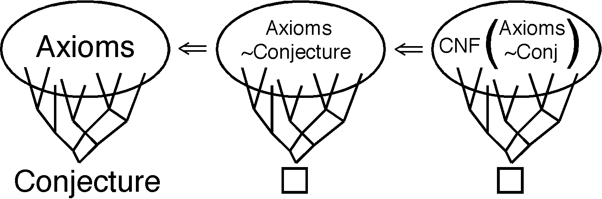

ATP Proof Techniques
Natural to Machine
- Axioms |= Conjecture ?
- Axioms U {~Conjecture} is unsatisfiable (contradictory) ?
- CNF(Axioms U {~Conjecture}) is unsatisfiable ?

- All modes have derivations of their final formula by applying
inference rules to initial and previously derived formulae